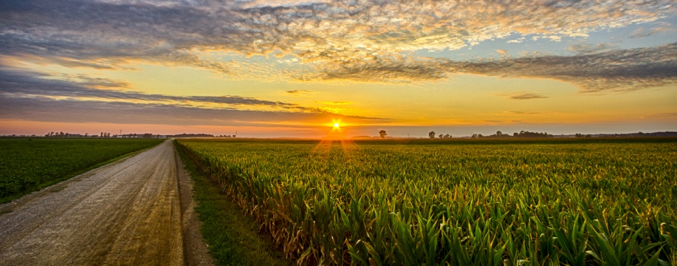
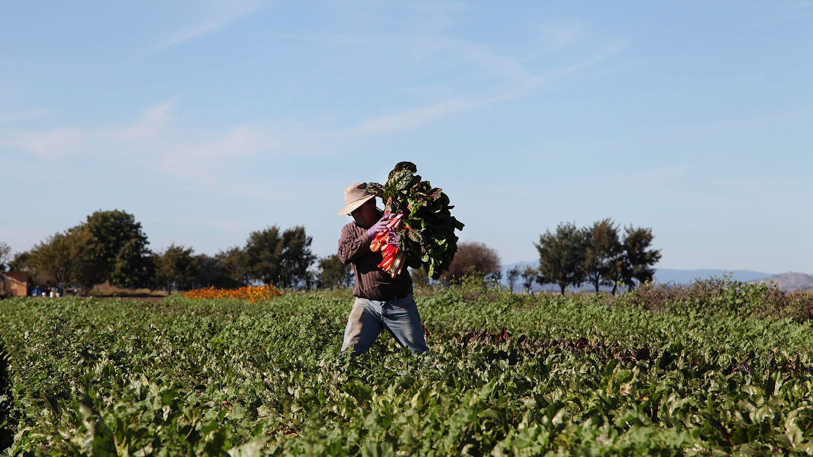

Agroquímicos, progreso y muerte
menu
Acerca de nosotros
Agricultura
Impacto
Soluciones
Acerca de nosotros
Agricultura
Impacto
Soluciones

Agricultura en México
Una de las principales actividades.

Una cuarta parte de los habitantes de México vive en zonas rurales y depende principalmente de la agricultura.